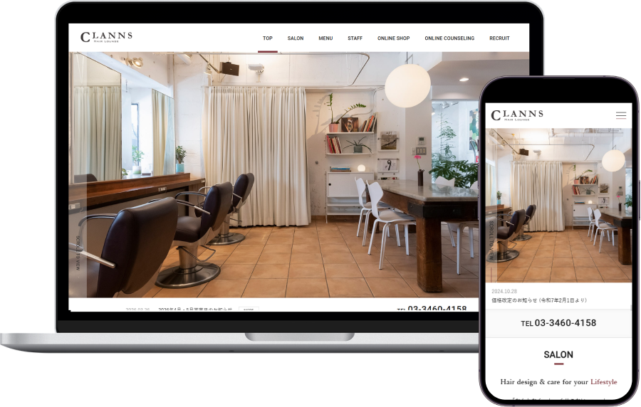
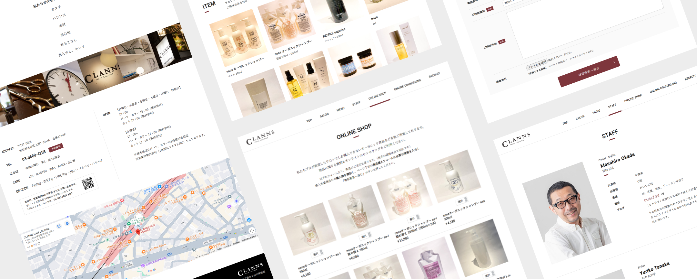
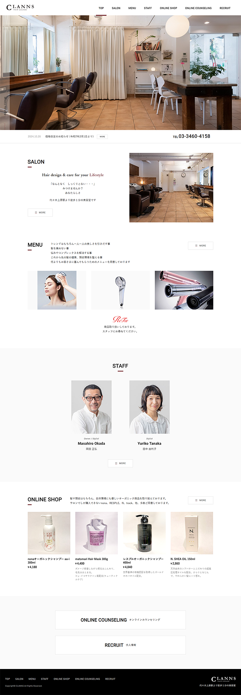
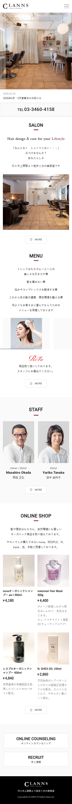

WORKS
つくったもの
CLANNS
WEB
- 担当業務
-
ディレクター
デザイナー
フロントエンドエンジニア
- 制作期間
-
ディレクション : 1週間
ワイヤーフレーム : 1週間
デザイン : 1ヶ月
コーディング：1ヶ月 - 予算規模
- 50万円
- 使用ツール
- Photoshop / Dreamweaver
- 使用言語
- HTML / CSS / JavaScript / jQuery

美容室公式WEBサイト新規制作プロジェクト
美容室の認知拡大および集客強化を目的とした、公式WEBサイトの新規制作プロジェクトに参画し、既存サイトが存在しない状態からの立ち上げにおいて、情報設計からUI/UX設計まで一貫して担当しました。
ユーザーが直感的にサービス内容を理解できるよう、シンプルで視認性の高いレイアウト設計を実施し、店舗の雰囲気や強みが伝わるビジュアル設計とコンテンツ構成を意識し、来店動機につながる導線を構築しました。
また、レスポンシブ対応を前提とした設計・実装により、スマートフォンを中心とした閲覧環境でも快適な操作性を実現。
予約や問い合わせ、商品購入への導線を最適化することで、ユーザーのアクションを促進する設計としています。
ディレクション・ワイヤーフレーム作成・デザイン・コーディングまで一貫して担当し、約2ヶ月の制作期間でプロジェクトを完遂。
HTML / CSS / JavaScript / jQueryを用いた実装により、軽量かつ安定したサイト構築を実現しました。

ABOUT
概要
- クライアント
-
CLANNS
- 課題
-
- 既存の美容室であるにも関わらずWEBサイトが未整備で、オンライン上での認知・集客導線が不足していた
- 店舗の魅力やサービス内容がユーザーに十分に伝わっていなかった
- 新規顧客の獲得機会を逃している状態だった
- 目的
-
- 美容室の認知拡大と新規顧客の獲得
- 店舗のブランドイメージをWEB上で適切に表現すること
- ユーザーが安心して来店予約できる導線を構築すること
- 取り組み
-
- ディレクションからデザイン、実装まで一貫して担当し、情報設計をゼロから構築
- ユーザー視点での導線設計を行い、必要な情報へスムーズにアクセスできる構成を設計
- 美容室の雰囲気やコンセプトを反映したビジュアルデザインを制作
- レスポンシブ対応を行い、スマートフォンでも快適に閲覧できるUIを実装
- JavaScript / jQueryを用いた動きのある表現で視認性と印象向上を実現
- 成果・実績
-
- WEBサイト公開によりオンラインでの認知導線を確立
- 店舗の雰囲気や強みを視覚的に伝えることに成功
- ユーザーが安心して来店を検討できる情報設計を実現
- デザインから実装まで一貫対応することで、統一感のあるサイトを構築
- ターゲット
-
既存顧客に加え、新規来店を検討している20代〜40代の男女を中心に、落ち着いた空間で安心して施術を受けたいと考える層をターゲットとした。
- クライアントの要望
-
店舗の雰囲気やこだわりをしっかり伝えたいという要望に加え、初めての来店でも安心感を持ってもらえるようなデザインと、シンプルで見やすい構成が求められた。
CONCEPT
コンセプト
- デザインイメージ
-
落ち着きと上質さを感じさせるトーンをベースに、清潔感と信頼感を兼ね備えたミニマルなデザインを採用し、長く通いたくなるような安心感のある印象を重視した。
- コンセプト
-
「安心して通える、上質で落ち着いた美容室体験」をコンセプトに、過度な装飾を避けたシンプルなデザインと、直感的に情報へアクセスできる構成を意識して設計した。
- フォント
-
游ゴシック
- カラー
-
ベースカラーには落ち着いたニュートラルカラーを採用し、清潔感と上品さを表現。アクセントには柔らかいトーンのカラーを使用することで、親しみやすさと温かみを演出した。

